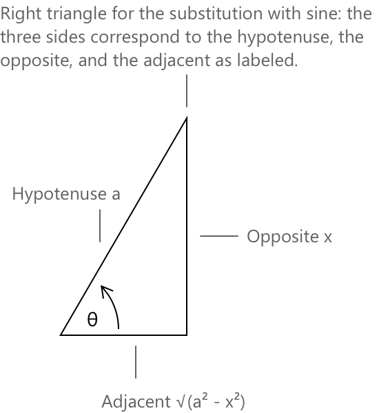

Тригонометрична підстановка в інтегралах
Як працює тригонометрична підстановка
Тригонометрична підстановка — це метод обчислення інтегралів, що містять квадратні корені з квадратичних виразів. Він ґрунтується на простій ідеї: певні алгебраїчні форми стають набагато простішими для обробки, якщо їх переписати, використовуючи тригонометричні тотожності (тотожності Піфагора). Метод полягає у заміні змінної \(x=\phi(\theta)\), обраній таким чином, щоб квадратичний вираз під радикалом перетворився на квадрат тригонометричної функції в новій змінній.
Після відповідних алгебраїчних перетворень багато інтегралів в елементарному численні можуть бути зведені до однієї з наступних канонічних форм, де \(a > 0\):
\[ \sqrt{a^2-x^2} \] \[\sqrt{x^2+a^2} \] \[\sqrt{x^2-a^2} \]
Щоб радикал мав дійсне значення, змінна \( x \) повинна належати до відповідної області визначення:
- \(\sqrt{a^2 - x^2}\; \) вимагає \(x \in [-a, a]\)
- \(\sqrt{x^2 + a^2}\, \) визначена \(\forall \, x \in \mathbb{R}\)
- \(\sqrt{x^2 – a^2}\, \) вимагає \(x \in (-\infty, -a] \cup [a, \infty)\)
Ці обмеження є істотними, оскільки вони визначають не лише те, де підінтегральна функція визначена, а й допустиму область значень допоміжного кута \( \theta \), що вводиться при підстановці. Зокрема, вибір проміжку для \( \theta \) гарантує, що обернені тригонометричні функції визначені однозначно, а абсолютні значення, що виникають із квадратних коренів, можуть бути оброблені послідовно. Кожен із цих виразів природним чином пов'язаний із тригонометричною тотожністю:
\[1-\sin^2\theta=\cos^2\theta \] \[1+\tan^2\theta=\sec^2\theta \] \[\sec^2\theta-1=\tan^2\theta\]
Підстановки обираються так, щоб член під квадратним коренем відповідав лівій частині однієї з цих тотожностей, перетворюючи радикал на вираз без радикалів. Нижче наведено три стандартні випадки, кожен з яких ілюструє, як відповідна тригонометрична підстановка перетворює радикальний вираз на повний квадрат і спрощує інтеграл.
На практиці вираз під квадратним коренем рідко представлений в одній із трьох канонічних форм одразу. Поширеним попереднім кроком є переписування загального квадратичного виразу \(ax^2+bx+c\) у форму, що відповідає одному зі стандартних шаблонів, шляхом виділення повного квадрата.
Наприклад, \(x^2+4x+5\) стає \((x+2)^2+1\) після виділення повного квадрата, що має вигляд \(u^2+a^2\) з \(u=x+2\) та \(a=1\). Після того як квадратичний вираз буде переписаний таким чином, проста підстановка \(u=x+k\) зводить інтеграл до одного з трьох випадків, описаних нижче, і тоді можна застосувати відповідну тригонометричну підстановку.
Розпізнавання цього попереднього кроку часто є ключем до розуміння того, яка підстановка потрібна, а пропуск цього кроку є частим джерелом плутанини, коли підінтегральна функція не відповідає знайомому шаблону одразу.
Від підстановок до геометрії
З геометричної точки зору ці підстановки можна інтерпретувати як параметризації конічних перетинів.
- Тотожність \(\sin^2\theta + \cos^2\theta = 1\) відповідає одиничному колу і лежить в основі випадку \(\sqrt{a^2 – x^2}\).
- Тотожності \(1 + \tan^2\theta = \sec^2\theta\) та \(\sec^2\theta – 1 = \tan^2\theta\) пов'язані з геометрією гіперболи \(x^2 – y^2 = a^2\) і лежать в основі форм \(\sqrt{x^2 + a^2}\) та \(\sqrt{x^2 – a^2}\).
У цьому сенсі тригонометрична підстановка є не просто алгебраїчним трюком, а геометричною репараметризацією квадратичних кривих.
Форма \(\sqrt{a^2-x^2}\)
Коли підінтегральний вираз містить вираз вигляду \( \sqrt{a^2 – x^2} \), доцільно ввести тригонометричну підстановку, що відображає піфагорову тотожність \( 1 – \sin^2\theta = \cos^2\theta \), яка сама випливає з фундаментального зв'язку між синусом і косинусом. З цієї причини ми встановлюємо:
\[ x = a \sin\theta \]
так, щоб алгебраїчна величина під квадратним коренем могла бути переписана через тригонометричну функцію. Диференціюючи обидві частини підстановки відносно \( \theta \), ми отримаємо:
\[ dx = a \cos\theta \, d\theta \]
Підставляючи \( x = a \sin\theta \) у вираз під коренем, ми можемо переписати квадратний корінь наступним чином:
\[ \sqrt{a^2 – x^2} = \sqrt{a^2 - a^2 \sin^2\theta} \]
Винесення \( a^2 \) за дужки у виразі під коренем дає:
\[ \sqrt{a^2(1 – \sin^2\theta)} \]
Використовуючи тотожність \( 1 – \sin^2\theta = \cos^2\theta \), це перетворюється на:
\[ \sqrt{a^2 \cos^2\theta} = a \sqrt{\cos^2\theta} = a |\cos\theta| \]
Щоб уникнути неоднозначності, пов'язаної з абсолютним значенням, зазвичай обмежують кут \( \theta \) проміжком:
\[ \theta \in \left[-\frac{\pi}{2}, \frac{\pi}{2}\right] \]
оскільки на цьому проміжку маємо \( \cos\theta \ge 0 \). За такого обмеження абсолютне значення більше не є необхідним, і корінь спрощується до:
\[ \sqrt{a^2 - x^2} = a \cos\theta \]
Нарешті, повертаючись до початкової змінної \( x \), зв'язки, що випливають із підстановки, можна записати явно як:
\[ \sin\theta = \frac{x}{a} \]
\[ \cos\theta = \frac{\sqrt{a^2 – x^2}}{a} \]
і, отже, кут можна виразити через арксинус:
\[ \theta = \arcsin\left(\frac{x}{a}\right) \]
Ці співвідношення дозволяють нам виразити кінцевий результат інтегрування повністю через початкову змінну.
Геометрична інтерпретація часто є корисною: якщо \(\sin\theta=x/a\), можна використовувати прямокутний трикутник з гіпотенузою \(a\), протилежним катетом \(x\) та прилеглим катетом \(\sqrt{a^2-x^2}\).
Стандартні відповідності для \(\sqrt{a^2-x^2}\) можна запам'ятати наступним чином:
- Форма з коренем: \(\sqrt{a^2-x^2}\)
- Підстановка: \(x=a\sin\theta\)
- Використана тотожність: \(1-\sin^2\theta=\cos^2\theta\)
Геометрична інтерпретація
При роботі з тригонометричними підстановками часто корисно візуалізувати зв'язок між \(\theta\) та \(x\) за допомогою прямокутного трикутника. Замість того щоб покладатися лише на алгебраїчні тотожності, можна зчитувати значення всіх тригонометричних функцій безпосередньо зі сторін трикутника, без необхідності явно розв'язувати рівняння відносно \(\theta\).

З \(\text{виразу } x = a\sin\theta\) ми будуємо прямокутний трикутник, де:
- гіпотенуза дорівнює \(a\)
- протилежний катет дорівнює \(x\)
- прилеглий катет дорівнює \(\sqrt{a^2 – x^2}\)
Оскільки \(\sin\theta = \frac{x}{a}\), звідси випливає, що \(\cos\theta = \frac{\sqrt{a^2 - x^2}}{a}.\) Це геометричне представлення дозволяє переписати всі тригонометричні функції від \(\theta\) безпосередньо через \(x\).
Така ж побудова застосовується до двох інших стандартних форм: для \(\sqrt{x^2+a^2}\) малюють трикутник з протилежним катетом \(x\), прилеглим катетом \(a\) та гіпотенузою \(\sqrt{x^2+a^2}\); для \(\sqrt{x^2-a^2}\) гіпотенузою стає \(x\), прилеглим катетом \(a\), а протилежним катетом \(\sqrt{x^2-a^2}\). У кожному випадку трикутник будується безпосередньо з підстановки та слугує надійним орієнтиром для етапу зворотньої підстановки.
Приклад 1
Обчислимо наступний інтеграл:
\[ \int \sqrt{a^2 – x^2}\,dx \quad (a>0) \]
Оскільки підінтегральна функція містить вираз \( \sqrt{a^2 - x^2} \), введемо тригонометричну підстановку:
\[ x = a\sin\theta \quad \theta \in \left[-\frac{\pi}{2},\frac{\pi}{2}\right]\]
так що ми зможемо скористатися тотожністю \( 1 – \sin^2\theta = \cos^2\theta \) з \( \cos\theta \ge 0 \) на цьому проміжку. Диференціювання підстановки дає:
\[ dx = a\cos\theta\,d\theta \]
Тепер перепишемо корінь:
\[ \sqrt{a^2 – x^2} = \sqrt{a^2 - a^2\sin^2\theta} = a\sqrt{1 – \sin^2\theta} = a\cos\theta \]
Підставляючи все в інтеграл, отримаємо:
\[ \int \sqrt{a^2 – x^2}\,dx = \int (a\cos\theta)(a\cos\theta\,d\theta) = a^2\int \cos^2\theta\,d\theta \]
Щоб проінтегрувати \( \cos^2\theta \), скористаємося формулою подвійного кута:
\[ \cos^2\theta = \frac{1+\cos 2\theta}{2} \]
Отже:
\[ a^2\int \cos^2\theta\,d\theta = \frac{a^2}{2}\int (1+\cos 2\theta)\,d\theta \]
Інтегруючи почленно, маємо:
\[ \frac{a^2}{2}\theta + \frac{a^2}{4}\sin 2\theta + c \]
Повертаючись до змінної \(x\), з підстановки \( x = a\sin\theta \) маємо:
\[ \theta = \arcsin\left(\frac{x}{a}\right) \]
Щоб переписати \( \sin 2\theta \), скористаємося:
\[ \sin 2\theta = 2\sin\theta\cos\theta \]
І оскільки:
\[ \sin\theta=\frac{x}{a} \qquad \cos\theta=\frac{\sqrt{a^2-x^2}}{a} \]
отримаємо:
\[ \sin 2\theta = 2\cdot \frac{x}{a}\cdot \frac{\sqrt{a^2-x^2}}{a} = \frac{2x\sqrt{a^2-x^2}}{a^2} \]
Підставляючи назад:
\[ \frac{a^2}{2}\theta + \frac{a^2}{4}\sin 2\theta = \frac{a^2}{2}\arcsin\left(\frac{x}{a}\right) + \frac{x}{2}\sqrt{a^2-x^2} \]
Результат:
\[ \int \sqrt{a^2 – x^2}\,dx = \frac{x}{2}\sqrt{a^2-x^2} + \frac{a^2}{2}\arcsin\left(\frac{x}{a}\right) + c \]
Це завершує обчислення. Інтеграл було зведено до тригонометричної форми, обчислено за допомогою стандартних тотожностей і, зрештою, повністю переписано через початкову змінну \(x\).
Форма \(\sqrt{x^2+a^2}\)
Коли підінтегральна функція містить вираз вигляду \( \sqrt{x^2 + a^2} \), зручно ввести підстановку на основі піфагорової тотожності:
\[ 1 + \tan^2\theta = \sec^2\theta \]
яка пов'язує тангенс та секанс. З цієї причини ми встановлюємо \(x = a \tan\theta\), щоб квадратичний вираз під коренем можна було переписати через тригонометричну функцію. Диферензуючи обидві частини відносно \( \theta \), отримаємо:
\[ dx = a \sec^2\theta \, d\theta \]
Підстановка \( x = a \tan\theta \) у вираз під коренем дає:
\[ \sqrt{x^2 + a^2} = \sqrt{a^2 \tan^2\theta + a^2} \]
Виносячи \( a^2 \) за дужки у виразі під коренем, отримаємо:
\[ \sqrt{a^2(\tan^2\theta + 1)} \]
Використовуючи тотожність \( 1 + \tan^2\theta = \sec^2\theta \), це набуває вигляду:
\[ \sqrt{a^2 \sec^2\theta} = a \sqrt{\sec^2\theta} = a |\sec\theta| \]
Щоб усунути неоднозначність, що виникає через модуль, зазвичай обмежують кут \( \theta \) наступним проміжком:
\[ \theta \in \left(-\frac{\pi}{2}, \frac{\pi}{2}\right) \]
оскільки на цьому проміжку \( \cos\theta > 0 \) і, отже, \( \sec\theta > 0 \). За такого обмеження корінь спрощується до:
\[ \sqrt{x^2 + a^2} = a \sec\theta \]
Повертаючись до початкової змінної \( x \), зв'язки, що випливають із підстановки, можна записати явно як:
\[\tan\theta = \frac{x}{a}\] \[\sec\theta = \frac{\sqrt{x^2 + a^2}}{a}\] \[\theta = \arctan\left(\frac{x}{a}\right)\]
Відповідна геометрична інтерпретація є очевидною: з relation \( \tan\theta = \frac{x}{a} \) можна побудувати прямокутний трикутник, у якому прилеглий катет має довжину \( a \), протилежний катет має довжину \( x \), а гіпотенуза, за теоремою Піфагора, має довжину \( \sqrt{x^2 + a^2} \). Цей трикутник дає чітку геометричну картину підстановки та допомагає візуалізувати, чому вираз під коренем стає тригонометричною функцією.
Стандартні відповідності для \(\sqrt{x^2+a^2}\) можна запам'ятати наступним чином:
- Форма з коренем: \(\sqrt{x^2+a^2}\)
- Підстановка: \(x=a\tan\theta\)
- Використана тотожність: \(1+\tan^2\theta=\sec^2\theta\)
Приклад 2
Обчислимо наступний інтеграл:
\[ \int \frac{dx}{\sqrt{x^2+a^2}} \quad (a>0) \]
Оскільки підінтегральна функція містить вираз \(\sqrt{x^2+a^2}\), введемо тригонометричну підстановку:
\[x = a\tan\theta \quad \theta \in \left(-\frac{\pi}{2},\frac{\pi}{2}\right)\]
так що ми зможемо скористатися тотожністю \(1+\tan^2\theta=\sec^2\theta\) з \(\sec\theta > 0\) на цьому проміжку. Диференціювання підстановки дає:
\[ dx = a\sec^2\theta\,d\theta \]
Тепер перепишемо ірраціональний вираз:
\[ \begin{align} \sqrt{x^2+a^2} &= \sqrt{a^2\tan^2\theta+a^2} \\[6pt] &= a\sqrt{\tan^2\theta+1} \\[6pt] &= a\sec\theta \end{align} \]
Підставляючи все в інтеграл, отримаємо:
\[ \int \frac{dx}{\sqrt{x^2+a^2}} = \int \frac{a\sec^2\theta}{a\sec\theta}\,d\theta = \int \sec\theta\,d\theta \]
Щоб обчислити \(\int\sec\theta\,d\theta\), помножимо чисельник і знаменник на \(\sec\theta+\tan\theta\):
\[ \begin{align} \int \sec\theta\,d\theta &= \int \frac{\sec\theta(\sec\theta+\tan\theta)}{\sec\theta+\tan\theta}\,d\theta \\[6pt] &= \int \frac{\sec^2\theta+\sec\theta\tan\theta}{\sec\theta+\tan\theta}\,d\theta \end{align} \]
Поклавши \( u = \sec\theta+\tan\theta \), маємо \( du = (\sec^2\theta+\sec\theta\tan\theta),d\theta \), отже чисельник точно дорівнює \( du \), і інтеграл зводиться до:
\[ \int \frac{du}{u} = \ln|u|+c = \ln|\sec\theta+\tan\theta|+c \]
Повертаючись до змінної \(x\), оскільки:
\[ \tan\theta = \frac{x}{a} \qquad \sec\theta = \frac{\sqrt{x^2+a^2}}{a} \]
отримаємо:
\[ \ln|\sec\theta+\tan\theta|+c = \ln\left|\frac{\sqrt{x^2+a^2}+x}{a}\right|+c \]
Оскільки \(\sqrt{x^2+a^2} > |x|\) для всіх \(x \in \mathbb{R}\), величина \(\sqrt{x^2+a^2}+x\) є строго додатною, і модуль можна відкинути. Більше того:
\[ \ln\left|\frac{\sqrt{x^2+a^2}+x}{a}\right| = \ln \! \left(\sqrt{x^2+a^2}+x\right)-\ln a \]
і \(\ln a\) є сталою, яку можна включити в \(c\).
Результат:
\[ \int \frac{dx}{\sqrt{x^2+a^2}} = \ln \! \left(\sqrt{x^2+a^2}+x\right)+c \]
На цьому обчислення завершено. Інтеграл було зведено до тригонометричної форми, обчислено за допомогою стандартних перетворень секанса і, зрештою, повністю переписано через початкову змінну \(x\).
Форма \( \sqrt{x^2 - a^2} \)
Коли підінтегральна функція містить вираз вигляду \( \sqrt{x^2 – a^2} \), природно ввести підстановку, що ґрунтується на теоремі Піфагора:
\[ \sec^2\theta – 1 = \tan^2\theta \]
що еквівалентно фундаментальному відношенню \( 1 + \tan^2\theta = \sec^2\theta \). З цієї причини ми встановлюємо:
\[ x = a \sec\theta \]
так що квадратичний вираз під коренем можна переписати через тригонометричні функції. Диференціюючи обидві частини відносно \( \theta \), отримаємо:
\[ dx = a \sec\theta \tan\theta \, d\theta \]
Підстановка \( x = a \sec\theta \) в ірраціональний вираз дає:
\[ \sqrt{x^2 – a^2} = \sqrt{a^2 \sec^2\theta - a^2} \]
Виносячи \( a^2 \) за дужки під коренем, отримаємо
\[ \sqrt{a^2(\sec^2\theta – 1)} \]
Використовуючи тотожність \( \sec^2\theta – 1 = \tan^2\theta \), це набуває вигляду:
\[ \sqrt{a^2 \tan^2\theta} = a \sqrt{\tan^2\theta} = a |\tan\theta| \]
Наявність модуля відображає той факт, що знак \( \tan\theta \) залежить від обраної області визначення для \( \theta \). Наприклад, якщо ми працюємо за припущенням \( x \ge a \), зручним обмеженням є:
\[ \theta \in \left[0, \frac{\pi}{2}\right) \]
оскільки на цьому проміжку маємо \( \sec\theta \ge 1 \) та \( \tan\theta \ge 0 \). За такого обмеження корінь спрощується до:
\[ \sqrt{x^2 - a^2} = a \tan\theta \]
Коли \(x \leq -a\), натомість обмежують \(\theta \in \left(\frac{\pi}{2}, \pi\right]\), так що \(\sec\theta \leq -1\) та \(\tan\theta \leq 0\); у цьому випадку \(|\tan\theta| = -\tan\theta.\) Для більшості підручникових задач достатньо припустити \(x \geq a\) і працювати з проміжком \(\left[0,\frac{\pi}{2}\right)\).
Повертаючись до початкової змінної \( x \), відношення, що випливають із підстановки, можна записати явно як:
\[\sec\theta = \frac{x}{a}\] \[\tan\theta = \frac{\sqrt{x^2 - a^2}}{a}\]
Еквівалентно, можна виразити сам кут через обернену тригонометричну функцію, записавши:
\[ \theta = \operatorname{arcsec}\left(\frac{x}{a}\right) \]
на відповідній області визначення. Однак у багатьох практичних ситуаціях достатньо переписати \( \tan\theta \) та \( \sec\theta \) безпосередньо через \( x \) та \( \sqrt{x^2 - a^2} \), не розв'язуючи явно відносно \( \theta \).
Відповідна геометрична інтерпретація випливає безпосередньо з відношення \(\sec\theta = x/a\): можна побудувати прямокутний трикутник, у якому гіпотенуза має довжину \(x\), прилеглий катет має довжину \(a\), а протилежний катет, за теоремою Піфагора, має довжину \(\sqrt{x^2-a^2}\). Цей трикутник робить підстановку геометрично прозорою і забезпечує надійний спосіб визначення значень \(\sec\theta\) та \(\tan\theta\) безпосередньо зі сторін, без явного розв'язання для \(\theta\).
Стандартні відповідності для \(\sqrt{x^2-a^2}\) можна запам'ятати наступним чином:
- Форма радикалу:\(\sqrt{x^2-a^2}\)
- Підстановка: \(x=a\sec\theta\)
- Використана тотожність: \(\sec^2\theta-1=\tan^2\theta\)
Приклад 3
Обчислимо наступний інтеграл:
\[ \int \frac{dx}{\sqrt{x^2-a^2}} \quad (a>0, \; x>a) \]
Оскільки підінтегральна функція містить вираз \(\sqrt{x^2-a^2}\), введемо тригонометричну підстановку:
\[x = a\sec\theta \quad \theta \in \left[0,\frac{\pi}{2}\right)\]
так що ми зможемо використати тотожність \(\sec^2\theta-1=\tan^2\theta\) з \(\tan\theta \ge 0\) на цьому проміжку. Диференціювання підстановки дає:
\[ dx = a\sec\theta\tan\theta\,d\theta \]
Тепер перепишемо радикал:
\[ \begin{align} \sqrt{x^2-a^2} &= \sqrt{a^2\sec^2\theta-a^2} \\[6pt] &= a\sqrt{\sec^2\theta-1} \\[6pt] &= a\tan\theta \end{align} \]
Підставляючи все в інтеграл, отримаємо:
\[ \int \frac{dx}{\sqrt{x^2-a^2}} = \int \frac{a\sec\theta\tan\theta}{a\tan\theta}\,d\theta = \int \sec\theta\,d\theta \]
Щоб обчислити \(\int\sec\theta,d\theta\), помножимо чисельник і знаменник на \(\sec\theta+\tan\theta\):
\[ \begin{align} \int \sec\theta,d\theta &= \int \frac{\sec\theta(\sec\theta+\tan\theta)}{\sec\theta+\tan\theta}\,d\theta \\[6pt] &= \int \frac{\sec^2\theta+\sec\theta\tan\theta}{\sec\theta+\tan\theta}\,d\theta \end{align} \]
Поклавши \( u = \sec\theta+\tan\theta \), маємо \( du = (\sec^2\theta+\sec\theta\tan\theta),d\theta \), отже чисельник точно дорівнює \( du \), і інтеграл зводиться до:
\[ \int \frac{du}{u} = \ln|u|+c = \ln|\sec\theta+\tan\theta|+c \]
Повертаючись до змінної \(x\), оскільки:
\[ \sec\theta = \frac{x}{a} \quad \tan\theta = \frac{\sqrt{x^2-a^2}}{a} \]
отримаємо:
\[ \ln|\sec\theta+\tan\theta|+c = \ln \! \left|\frac{x+\sqrt{x^2-a^2}}{a}\right|+c \]
Оскільки \(x > a > 0\) та \(\sqrt{x^2-a^2} \ge 0\), величина \(x+\sqrt{x^2-a^2}\) є строго додатною, і модуль можна відкинути. Більше того:
\[ \ln \! \left(\frac{x+\sqrt{x^2-a^2}}{a}\right) = \ln \! \left(x+\sqrt{x^2-a^2}\right)-\ln a \]
а \(\ln a\) є сталою, яку можна включити в \(c\).
Результат:
\[ \int \frac{dx}{\sqrt{x^2-a^2}} = \ln \! \left(x+\sqrt{x^2-a^2}\right)+c \]
Це завершує обчислення. Структура виведення тісно повторює структуру Прикладу 2: в обох випадках підстановка зводить інтеграл до \(\int\sec\theta,d\theta\), а різниця полягає виключно в кроці зворотної підстановки, де вирази для \(\sec\theta\) та \(\tan\theta\) через \(x\) відображають геометрію двох різних форм радикалів.
Резюме
| Форма радикалу | Підстановка | Тотожність | Область визначення |
|---|---|---|---|
| \( \sqrt{a^2 – x^2} \) | \( x = a\sin\theta \) | \( 1 – \sin^2\theta = \cos^2\theta \) | \( \theta \in \left[-\dfrac{\pi}{2}, \dfrac{\pi}{2}\right] \) |
| \( \sqrt{x^2 + a^2} \) | \( x = a\tan\theta \) | \( 1 + \tan^2\theta = \sec^2\theta \) | \( \theta \in \left(-\dfrac{\pi}{2}, \dfrac{\pi}{2}\right) \) |
| \( \sqrt{x^2 – a^2} \) | \( x = a\sec\theta \) | \( \sec^2\theta – 1 = \tan^2\theta \) | \( \theta \in \left[0, \dfrac{\pi}{2}\right) \) |
Вибрані джерела
-
James Stewart. Trigonometric Substitution (Student Support)
-
Trinity University. Trigonometric Substitution – Calculus II Lecture Slides
-
University of California. Trigonometric Substitution (Notes with Exercises)